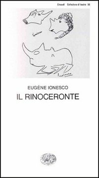

37:41 · 6 OPERE
I criptomessaggi nella stampa.
Il filo del discorso
Il relatore prende spunto da un articolo attribuito a Francesco Grignetti sulla propaganda russa e la guerra ibrida per discutere il modo in cui il linguaggio giornalistico orienta il lettore. Dichiara di soffermarsi soltanto sulle prime colonne: la sua lettura è quindi parziale e il testo originale non è stato riscontrato integralmente. Dal richiamo al buonsenso tedesco e al Mutterwitz di Kant passa a contestare formule che presentano un fenomeno come evidente senza esporne le prove. Il riferimento ad Adolfo Urso introduce una allusione a La vita è bella, mentre L’urlo di Munch e Il rinoceronte di Ionesco diventano immagini del disagio e del conformismo. La parola anonimi apre il tema centrale: il valore di un argomento dipende dalla sua qualità, non dalla celebrità di chi lo propone. La scheda distingue però identità nascosta e scarsa notorietà, e separa la critica del principio di autorità dalla svalutazione della competenza. McLuhan e il sapere aude kantiano accompagnano l’invito a leggere autonomamente. Nella parte conclusiva il relatore propone una interpretazione della fede come certezza interiore, discutendo Vangeli, fonte Q ed emunah. Queste tesi religiose e linguistiche sono attribuite e confrontate con lo stato delle fonti: Q resta una ricostruzione discussa e non un documento ritrovato. Il ritorno finale alla stampa ribadisce la richiesta di esaminare contenuti e prove; non dimostra da solo intenzioni occulte o una regia comune dei giornalisti.
I libri nel discorso

La vita è bella
Locandina internazionale Miramax: Film del 1997 diretto da Roberto Benigni. Locandina internazionale di catalogo Miramax con il titolo Life Is Beautiful.
Locandina autentica del catalogo Miramax, con Benigni, Nicoletta Braschi e Giorgio Cantarini e titolo inglese rosso. Non è presentata come prima locandina italiana del 1997 né come copertina di un libro.
La vita è bella e la scena con i bambini chiamati Adolfo e Benito sono espliciti.
Passaggio 11:56 ↗ · Fonti e libro ↗
L’urlo (Skrik / The Scream)
Dipinto del 1893, Nasjonalmuseet: Versione del 1893, tempera e pastello grasso su cartone, 91 × 73,5 cm. Nasjonalmuseet, Oslo, inventario NG.M.00939. Fotografia di Børre Høstland.
Riproduzione museale autentica dell’intero dipinto del 1893 con cornice. Non è una copertina editoriale; è distinta dalle altre versioni dipinte, dai pastelli e dalla litografia di Munch. Credito fotografico: Børre Høstland, Nasjonalmuseet.
Urlo di Munch esplicito, come simbolo della condizione presente.
Passaggio 20:03 ↗ · Fonti e libro ↗
Il rinoceronte
Copertina: Einaudi · Collezione di teatro
Copertina autentica controllata visivamente. Edizione di riferimento, non identificata come quella usata nel video.
Rinoceronti di Ionesco: titolo normalizzato al singolare del dramma.
Passaggio 21:12 ↗ · Fonti e libro ↗
Gli strumenti del comunicare (Understanding Media)
Identificazione probabile
Copertina: Il Saggiatore, 2023, traduzione di Ettore Capriolo; opera originale del 1964.
Immagine autentica dell’opera, controllata visivamente; l’edizione di riferimento non è attribuita al filmato.
Marshall McLuhan e il mezzo come messaggio; titolo del libro non pronunciato, riferimento probabile a Understanding Media.
Passaggio 29:23 ↗ · Fonti e libro ↗
Risposta alla domanda: che cos’è l’Illuminismo?
Identificazione probabile
Copertina della raccolta che comprende il saggio sull’Illuminismo: Firenze University Press · Sette scritti politici liberi · 2011 · a cura di Maria Chiara Pievatolo
Copertina del volume cartaceo FUP che comprende il saggio, riscontrato dal catalogo universitario. L’ISBN appartiene alla raccolta; il filmato non annuncia un’edizione e il titolo del saggio è un’identificazione probabile della citazione.
Kant e sapere aude: collegamento probabile al saggio sull’Illuminismo del 1784, titolo non esplicito.
Passaggio 30:49 ↗ · Fonti e libro ↗
Bibbia
Copertina: San Paolo, 2014 · Nuova Versione dai Testi Antichi · edizione di riferimento
Vangeli, Gesù e lessico della fede espliciti; nessuna edizione determinata.
Passaggio 31:25 ↗ · Fonti e libro ↗